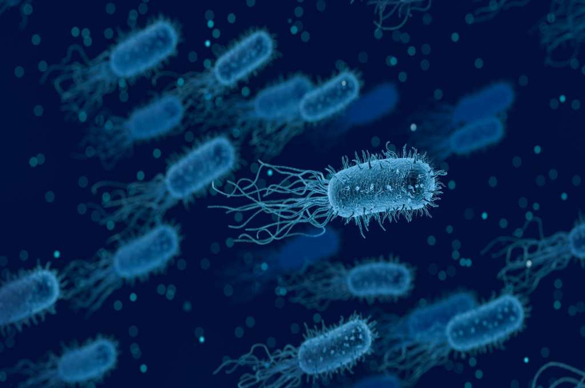

🏠 Halaman Home
Belajar Struktur & Fungsi Sel Bakteri Secara Visual & Interaktif
Web ini membantu siswa memahami struktur sel bakteri melalui materi inti, video pembelajaran, dan model 3D yang dapat diputar langsung.

Fitur Web
Apa yang bisa kamu pelajari?
Tiga fitur utama yang dirancang untuk memudahkan proses belajar.
Materi Lengkap
Pelajari pengertian, ciri umum, dan 9 struktur sel bakteri beserta fungsinya secara detail.
Buka Materi →Video Pembelajaran
Tonton video yang memvisualisasikan struktur dan fungsi sel bakteri secara animatif.
Tonton Video →Model 3D Interaktif
Putar dan eksplorasi model 3D sel bakteri untuk memahami posisi setiap bagian secara visual.
Lihat Model 3D →